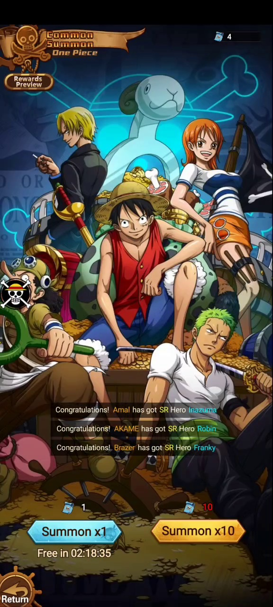
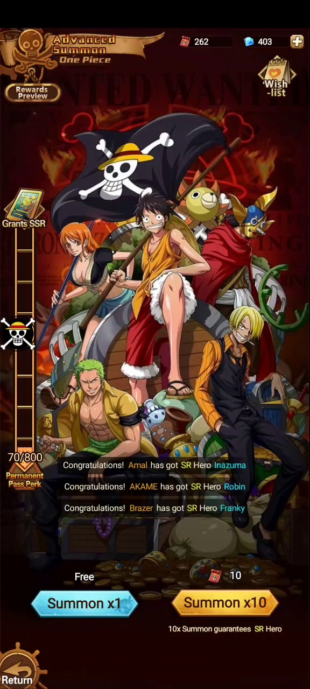
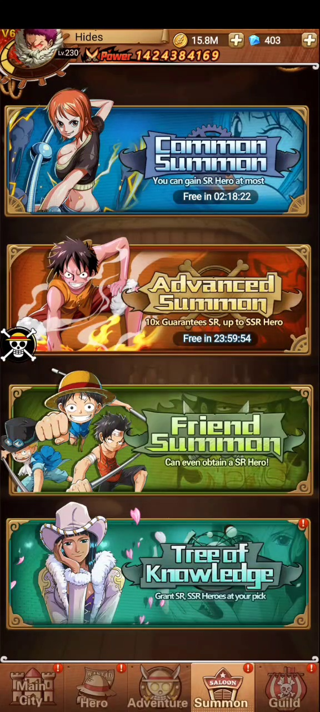
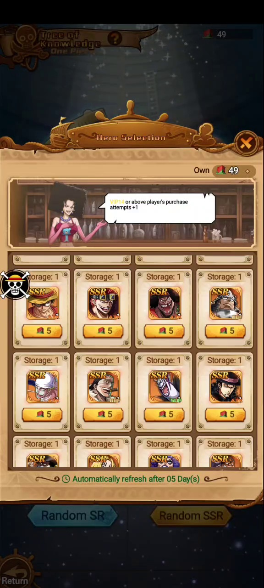
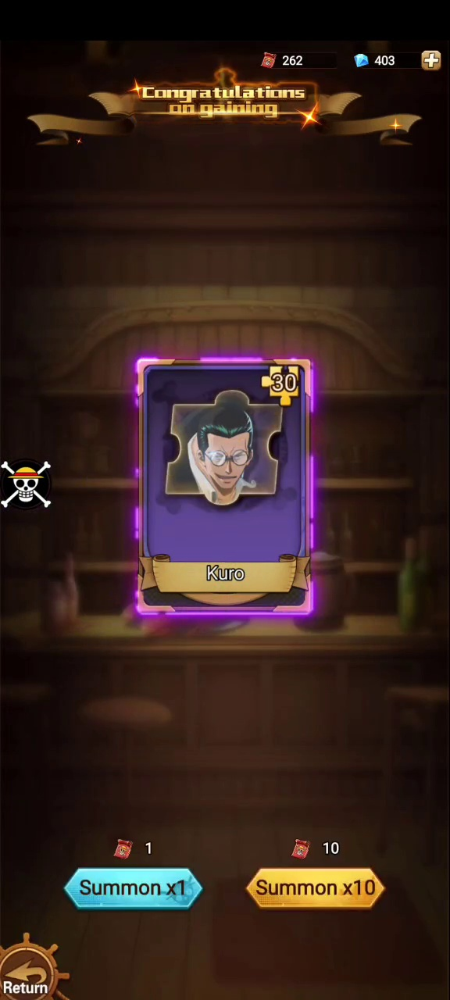

Fragmentos
Advanced Summon puede entregar fragmentos. Se observó Kuro x80.
 Idle Pirate Wiki
Idle Pirate Wiki
Invocación
Summon agrupa varios banners para conseguir héroes o fragmentos: Common Summon, Advanced Summon, Friend Summon y Tree of Knowledge.
Banners





Datos observados
| Banner | Coste / recurso | Regla visible | Notas |
|---|---|---|---|
| Common Summon | Ticket azul | Puede ganar SR como máximo. | Summon x1 gratis con temporizador visible. |
| Advanced Summon | Ticket rojo / diamantes | 10x Summon guarantees SR Hero. | Tiene Wish-list, Rewards Preview y barra Grants SSR 70/800. |
| Friend Summon | Pendiente | Can even obtain a SR Hero. | Probablemente usa puntos de amistad. |
| Tree of Knowledge | Moneda roja | Grant SR, SSR Héroes at your pick. | Héroes con stock 1, coste 5 y refresco automático cada 5 días. |
Resultados
Advanced Summon puede entregar fragmentos. Se observó Kuro x80.
Advanced Summon muestra una barra Grants SSR con progreso 70/800.
Common y Advanced muestran temporizadores de invocación gratis.